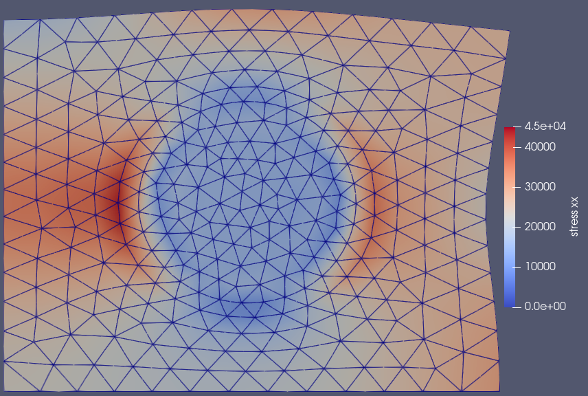

Multiple materials
In this tutorial, we will see how we can assemble a domain and solve a problem where we have multiple material behaviors. In this simple case, we will consider an elastic inclusion, embedded in a plastically deforming matrix. For this example, we'll use material models defined in the  Figure 1: Results showing the norm of the stress
MechanicalMaterialModels.jl package, which defines models according to the MaterialModelsBase interface.
The full script without intermediate comments is available at the bottom of this page.
using Ferrite, FerriteAssembly, MaterialModelsBase, MechanicalMaterialModels, WriteVTKSetup Ferrite quantities
We start by the grid with sets for the inclusion with radius 0.5 and the surrounding matrix.
function create_grid_with_inclusion()
p1 = Vec((-1.0, -1.0))
p2 = Vec(( 1.0, 1.0))
grid = generate_grid(Quadrilateral, (100, 100), p1, p2)
addcellset!(grid, "inclusion", x -> norm(x) < 0.5)
addcellset!(grid, "matrix", setdiff(1:getncells(grid), getcellset(grid, "inclusion")))
return grid
end
grid = create_grid_with_inclusion();Define interpolation
ip = Lagrange{RefQuadrilateral,1}()^2;Followed by the dof handler
dh = DofHandler(grid)
add!(dh, :u, ip)
close!(dh);And then Dirichlet conditions
ch = ConstraintHandler(dh)
add!(ch, Dirichlet(:u, getfacetset(grid,"left"), Returns(0.0), 1))
add!(ch, Dirichlet(:u, getfacetset(grid,"bottom"), Returns(0.0), 2))
f_dbc(x,t) = 0.01 * t # 1 % strain at t = 1
add!(ch, Dirichlet(:u, getfacetset(grid, "right"), f_dbc, 1))
close!(ch);Define cellvalues
qr = QuadratureRule{RefQuadrilateral}(2)
cv = CellValues(qr, ip);FerriteAssembly setup
We first define the material models, and use the ReducedStressState to get a plane strain response.
elastic_material = ReducedStressState(PlaneStrain(), LinearElastic(;E=210e3, ν=0.3))
plastic_material = ReducedStressState(PlaneStrain(), Plastic(;
elastic = LinearElastic(E = 210e3, ν = 0.3),
yield = 100.0,
isotropic = Voce(;Hiso = 100e3, κ∞ = 1000.0),
kinematic = ArmstrongFrederick(;Hkin = 0.0, β∞ = 1.0) # No kinematic hardening
));We need to create the domain buffers, where the difference from earlier tutorials is that we have multiple domains. The domain specification should then be a Dict with one entry for each domain:
domains = Dict(
"elastic"=>DomainSpec(dh, elastic_material, cv; set=getcellset(grid, "inclusion")),
"plastic"=>DomainSpec(dh, plastic_material, cv; set=getcellset(grid, "matrix")) );Now, we can call setup_domainbuffers, which accepts the same keyword arguments as setup_domainbuffer. Here, we accept the defaults.
buffer = setup_domainbuffers(domains);Postprocessing setup
In this tutorial, we also demonstrate how the QuadratureEvaluator can be used to obtain quadrature point data which can be used to visualize the results, in this case the stresses. Specifically, we will use the evaluated data in combination with Ferrite's L2Projector.
First, we define a function to calculate the stresses for each material. Note that here we have to use some internals from MechanicalMaterialModels.jl, but this should be solved with MaterialModelsBase#12.
function calculate_stress(m::ReducedStressState, u, ∇u, qp_state)
ϵ = MaterialModelsBase.expand_tensordim(m.stress_state, symmetric(∇u))
σ = calculate_stress(m.material, ϵ, qp_state)
return MaterialModelsBase.reduce_tensordim(m.stress_state, σ)
end
calculate_stress(m::LinearElastic, ϵ, qp_state) = m.C ⊡ ϵ
calculate_stress(m::Plastic, ϵ, qp_state) = calculate_stress(m.elastic, ϵ - qp_state.ϵp, qp_state)calculate_stress (generic function with 3 methods)And then we create the QuadratureEvaluator including this function
qe = QuadratureEvaluator{SymmetricTensor{2,2,Float64,3}}(buffer, calculate_stress)QuadratureEvaluator{SymmetricTensor{2, 2, Float64, 3}, typeof(Main.calculate_stress)}(SubArray{SymmetricTensor{2, 2, Float64, 3}, 1, Vector{SymmetricTensor{2, 2, Float64, 3}}, Tuple{UnitRange{Int64}}, true}[[[1.047081703e-315 1.03009122e-315; 1.03009122e-315 1.047081703e-315], [1.03009122e-315 2.0e-323; 2.0e-323 2.5e-323], [6.0e-323 6.4e-323; 6.4e-323 7.0e-323], [7.4e-323 8.0e-323; 8.0e-323 1.11787e-319]], [[1.1179e-319 1.11797e-319; 1.11797e-319 1.1185e-319], [1.11856e-319 1.1186e-319; 1.1186e-319 1.11866e-319], [1.1187e-319 1.11876e-319; 1.11876e-319 1.1188e-319], [1.11886e-319 1.1189e-319; 1.1189e-319 1.11896e-319]], [[1.0e-323 1.5e-323; 1.5e-323 2.0e-323], [2.5e-323 6.0e-323; 6.0e-323 6.4e-323], [8.0e-323 8.4e-323; 8.4e-323 9.0e-323], [1.9e-322 1.93e-322; 1.93e-322 2.0e-322]], [[2.03e-322 2.17e-322; 2.17e-322 1.11876e-319], [1.1188e-319 1.11896e-319; 1.11896e-319 1.119e-319], [1.11906e-319 1.1191e-319; 1.1191e-319 1.11916e-319], [1.1192e-319 2.0e-323; 2.0e-323 2.5e-323]], [[3.0e-323 3.5e-323; 3.5e-323 4.0e-323], [4.4e-323 5.0e-323; 5.0e-323 5.4e-323], [6.0e-323 6.4e-323; 6.4e-323 7.0e-323], [7.4e-323 8.0e-323; 8.0e-323 8.4e-323]], [[9.0e-323 1.9e-322; 1.9e-322 1.93e-322], [2.0e-322 2.03e-322; 2.03e-322 2.08e-322], [2.1e-322 2.17e-322; 2.17e-322 4.45e-322], [4.5e-322 4.55e-322; 4.55e-322 4.6e-322]], [[4.64e-322 4.7e-322; 4.7e-322 4.74e-322], [4.8e-322 4.84e-322; 4.84e-322 4.9e-322], [1.11787e-319 1.1179e-319; 1.1179e-319 1.11797e-319], [1.1185e-319 1.11856e-319; 1.11856e-319 1.1186e-319]], [[1.11866e-319 1.1187e-319; 1.1187e-319 1.11876e-319], [1.1188e-319 1.11886e-319; 1.11886e-319 1.1189e-319], [1.11896e-319 1.119e-319; 1.119e-319 1.11906e-319], [1.1191e-319 1.11916e-319; 1.11916e-319 1.1192e-319]], [[1.11975e-319 1.1198e-319; 1.1198e-319 1.11985e-319], [1.1199e-319 1.11995e-319; 1.11995e-319 9.4e-323], [1.0e-322 1.04e-322; 1.04e-322 1.1e-322], [1.14e-322 1.2e-322; 1.2e-322 1.53e-322]], [[1.6e-322 1.63e-322; 1.63e-322 1.7e-322], [1.73e-322 1.8e-322; 1.8e-322 1.83e-322], [1.9e-322 1.93e-322; 1.93e-322 2.0e-322], [2.03e-322 2.17e-322; 2.17e-322 1.057e-321]] … [[1.13067e-319 1.13116e-319; 1.13116e-319 1.1312e-319], [1.13126e-319 1.1313e-319; 1.1313e-319 1.13136e-319], [1.1319e-319 1.13195e-319; 1.13195e-319 1.132e-319], [1.13205e-319 1.1321e-319; 1.1321e-319 1.13265e-319]], [[1.1327e-319 1.13274e-319; 1.13274e-319 1.1328e-319], [1.13284e-319 1.13363e-319; 1.13363e-319 1.1337e-319], [1.13373e-319 1.1338e-319; 1.1338e-319 1.13383e-319], [1.13437e-319 1.1344e-319; 1.1344e-319 1.13447e-319]], [[1.1345e-319 1.13457e-319; 1.13457e-319 1.13487e-319], [1.1349e-319 1.13507e-319; 1.13507e-319 1.1351e-319], [1.13517e-319 1.1352e-319; 1.1352e-319 1.13526e-319], [1.1353e-319 1.13536e-319; 1.13536e-319 1.1354e-319]], [[1.13546e-319 1.1355e-319; 1.1355e-319 1.13556e-319], [1.1356e-319 1.13566e-319; 1.13566e-319 1.1357e-319], [1.13576e-319 1.1358e-319; 1.1358e-319 1.13586e-319], [1.1359e-319 1.13596e-319; 1.13596e-319 1.136e-319]], [[1.13605e-319 1.1361e-319; 1.1361e-319 1.13615e-319], [1.1362e-319 1.13625e-319; 1.13625e-319 1.1363e-319], [1.13635e-319 1.1364e-319; 1.1364e-319 1.09836e-319], [1.0984e-319 1.09846e-319; 1.09846e-319 1.0985e-319]], [[1.09855e-319 1.0986e-319; 1.0986e-319 1.09865e-319], [1.0987e-319 1.09875e-319; 1.09875e-319 1.0988e-319], [1.09885e-319 1.0989e-319; 1.0989e-319 1.09895e-319], [1.099e-319 1.09905e-319; 1.09905e-319 1.0991e-319]], [[1.09915e-319 1.0992e-319; 1.0992e-319 1.09925e-319], [1.0993e-319 1.09935e-319; 1.09935e-319 1.0994e-319], [1.09944e-319 1.0995e-319; 1.0995e-319 1.09954e-319], [1.0996e-319 1.09964e-319; 1.09964e-319 1.0997e-319]], [[1.09974e-319 1.0998e-319; 1.0998e-319 1.09984e-319], [1.0999e-319 1.09994e-319; 1.09994e-319 1.1e-319], [1.10004e-319 1.1001e-319; 1.1001e-319 1.10014e-319], [1.1002e-319 1.10023e-319; 1.10023e-319 1.1003e-319]], [[1.10033e-319 1.1004e-319; 1.1004e-319 1.10043e-319], [1.1005e-319 1.10053e-319; 1.10053e-319 1.1006e-319], [1.10063e-319 1.1007e-319; 1.1007e-319 1.10073e-319], [1.1008e-319 1.10083e-319; 1.10083e-319 1.1009e-319]], [[1.10093e-319 1.101e-319; 1.101e-319 1.10103e-319], [1.10107e-319 1.1011e-319; 1.1011e-319 1.10117e-319], [1.1012e-319 1.10127e-319; 1.10127e-319 1.1013e-319], [1.10137e-319 1.1014e-319; 1.1014e-319 1.10147e-319]]], Main.calculate_stress)Finally, we'll setup the L2Projector that we will use
proj = L2Projector(grid)
add!(proj, 1:getncells(grid), ip; qr_rhs = qr)
close!(proj)L2Projector
projection on: 10000/10000 cells in grid
function interpolation: Lagrange{RefQuadrilateral, 1}()
geometric interpolation: Lagrange{RefQuadrilateral, 1}()
Solving the nonlinear problem via time-stepping
function solve_nonlinear_timehistory(buffer, dh, ch, l2_proj, qp_evaluator; time_history)
maxiter = 100
tolerance = 1e-6
K = allocate_matrix(dh)
r = zeros(ndofs(dh))
a = zeros(ndofs(dh))
# Prepare postprocessing
pvd = paraview_collection("multiple_materials")
for (n, t) in enumerate(time_history)
# Update and apply the Dirichlet boundary conditions
update!(ch, t)
apply!(a, ch)
for i in 1:maxiter
# Assemble the system
assembler = start_assemble(K, r)
work!(assembler, buffer; a=a)
# Apply boundary conditions
apply_zero!(K, r, ch)
# Check convergence
@show (i, norm(r))
norm(r) < tolerance && break
i == maxiter && error("Did not converge")
# Solve the linear system and update the dof vector
a .-= K \ r
apply!(a, ch)
end
# If converged, update the old state variables to the current.
update_states!(buffer)
# Postprocess
work!(qp_evaluator, buffer; a=a)
stresses = project(l2_proj, qp_evaluator.data)
VTKGridFile("multiple_materials_$n", dh) do vtk
write_solution(vtk, dh, a)
write_projection(vtk, l2_proj, stresses, "stress")
Ferrite.write_cellset(vtk, dh.grid, "inclusion")
pvd[t] = vtk
end
end
close(pvd)
return nothing
end;
solve_nonlinear_timehistory(buffer, dh, ch, proj, qe; time_history=collect(range(0, 1, 20)));(i, norm(r)) = (1, 0.0)
(i, norm(r)) = (1, 1013.0396665382168)
(i, norm(r)) = (2, 71.69775942584674)
(i, norm(r)) = (3, 19.507028366079012)
(i, norm(r)) = (4, 7.646246156771923)
(i, norm(r)) = (5, 4.766598002699576)
(i, norm(r)) = (6, 4.6607170871576615)
(i, norm(r)) = (7, 4.723898982199312)
(i, norm(r)) = (8, 4.691484315663304)
(i, norm(r)) = (9, 4.600155921469466)
(i, norm(r)) = (10, 4.4633616689125795)
(i, norm(r)) = (11, 4.097478178732702)
(i, norm(r)) = (12, 3.997884698224978)
(i, norm(r)) = (13, 3.778271465051812)
(i, norm(r)) = (14, 3.667071854731892)
(i, norm(r)) = (15, 3.296006100114944)
(i, norm(r)) = (16, 3.3103088956152917)
(i, norm(r)) = (17, 3.0154178393253988)
(i, norm(r)) = (18, 2.8812085915271264)
(i, norm(r)) = (19, 2.4042233104075486)
(i, norm(r)) = (20, 2.3885920495856814)
(i, norm(r)) = (21, 1.804315981224312)
(i, norm(r)) = (22, 1.5498265361815133)
(i, norm(r)) = (23, 1.309173441633245e-12)
(i, norm(r)) = (1, 1006.6391802500334)
(i, norm(r)) = (2, 69.21989100174976)
(i, norm(r)) = (3, 15.247388615023727)
(i, norm(r)) = (4, 3.41127896630657)
(i, norm(r)) = (5, 2.6476384574886556)
(i, norm(r)) = (6, 1.7623247933817654)
(i, norm(r)) = (7, 0.49793925222499286)
(i, norm(r)) = (8, 0.03792778491630363)
(i, norm(r)) = (9, 0.00022647504617379676)
(i, norm(r)) = (10, 5.579260886960748e-9)
(i, norm(r)) = (1, 1001.0154353341237)
(i, norm(r)) = (2, 63.609168116749785)
(i, norm(r)) = (3, 8.48327125456369)
(i, norm(r)) = (4, 2.9869626363538244)
(i, norm(r)) = (5, 1.6406868057424366)
(i, norm(r)) = (6, 0.27962993670021635)
(i, norm(r)) = (7, 0.017129272149711487)
(i, norm(r)) = (8, 6.708071268971708e-5)
(i, norm(r)) = (9, 1.0069630193319311e-9)
(i, norm(r)) = (1, 999.8765129881765)
(i, norm(r)) = (2, 63.037630780382116)
(i, norm(r)) = (3, 8.505427615526388)
(i, norm(r)) = (4, 3.534919793029558)
(i, norm(r)) = (5, 2.104616361424009)
(i, norm(r)) = (6, 0.5150031473339716)
(i, norm(r)) = (7, 0.041734553109541606)
(i, norm(r)) = (8, 0.00037196773399075865)
(i, norm(r)) = (9, 2.686802117754478e-8)
(i, norm(r)) = (1, 998.717998351202)
(i, norm(r)) = (2, 62.934544650484014)
(i, norm(r)) = (3, 8.708110182026218)
(i, norm(r)) = (4, 4.06897801308848)
(i, norm(r)) = (5, 2.6000977189434584)
(i, norm(r)) = (6, 0.8444863975852521)
(i, norm(r)) = (7, 0.08151476847899432)
(i, norm(r)) = (8, 0.001046438813094071)
(i, norm(r)) = (9, 1.8832479574851728e-7)
(i, norm(r)) = (1, 997.5481155439368)
(i, norm(r)) = (2, 62.39234497877402)
(i, norm(r)) = (3, 8.804263127126607)
(i, norm(r)) = (4, 4.613925822929027)
(i, norm(r)) = (5, 3.091479964127221)
(i, norm(r)) = (6, 1.2382120284203277)
(i, norm(r)) = (7, 0.14368955864640762)
(i, norm(r)) = (8, 0.0012061809943403443)
(i, norm(r)) = (9, 2.226723637342524e-7)
(i, norm(r)) = (1, 996.3744650622164)
(i, norm(r)) = (2, 61.527165587696096)
(i, norm(r)) = (3, 8.894745768860597)
(i, norm(r)) = (4, 5.058951198242056)
(i, norm(r)) = (5, 3.4849120251000105)
(i, norm(r)) = (6, 1.563964809246237)
(i, norm(r)) = (7, 0.21781412142356232)
(i, norm(r)) = (8, 0.0024249577284123367)
(i, norm(r)) = (9, 3.9156030587700096e-7)
(i, norm(r)) = (1, 995.2026311964539)
(i, norm(r)) = (2, 61.17148865519613)
(i, norm(r)) = (3, 8.914902777535195)
(i, norm(r)) = (4, 5.53925582245801)
(i, norm(r)) = (5, 3.9394173761495153)
(i, norm(r)) = (6, 1.9677763463110598)
(i, norm(r)) = (7, 0.35766292779804637)
(i, norm(r)) = (8, 0.010279368021841094)
(i, norm(r)) = (9, 7.342440109271671e-6)
(i, norm(r)) = (10, 1.0583758201335668e-11)
(i, norm(r)) = (1, 994.0365772859614)
(i, norm(r)) = (2, 60.468479565950744)
(i, norm(r)) = (3, 8.976618038853536)
(i, norm(r)) = (4, 6.00188907088205)
(i, norm(r)) = (5, 4.411158919685252)
(i, norm(r)) = (6, 2.417340029796407)
(i, norm(r)) = (7, 0.5598324404830818)
(i, norm(r)) = (8, 0.025673855284058602)
(i, norm(r)) = (9, 4.7699737638598625e-5)
(i, norm(r)) = (10, 2.216667115149497e-10)
(i, norm(r)) = (1, 992.8791407181792)
(i, norm(r)) = (2, 59.96817796454579)
(i, norm(r)) = (3, 9.141498018161629)
(i, norm(r)) = (4, 6.3694980521687095)
(i, norm(r)) = (5, 4.7582437676239655)
(i, norm(r)) = (6, 2.746661624730865)
(i, norm(r)) = (7, 0.6770870896710698)
(i, norm(r)) = (8, 0.03555061185892614)
(i, norm(r)) = (9, 9.662374007960756e-5)
(i, norm(r)) = (10, 8.289597367010558e-10)
(i, norm(r)) = (1, 991.7323970928712)
(i, norm(r)) = (2, 59.480185546542984)
(i, norm(r)) = (3, 9.19976071133194)
(i, norm(r)) = (4, 6.693044926474488)
(i, norm(r)) = (5, 5.107930994230423)
(i, norm(r)) = (6, 3.0736351130198765)
(i, norm(r)) = (7, 0.8449093275989467)
(i, norm(r)) = (8, 0.050525172402953504)
(i, norm(r)) = (9, 0.00020862171828838592)
(i, norm(r)) = (10, 3.3836662285818097e-9)
(i, norm(r)) = (1, 990.5979038233154)
(i, norm(r)) = (2, 58.67932845246229)
(i, norm(r)) = (3, 9.403885538585998)
(i, norm(r)) = (4, 6.933241320079727)
(i, norm(r)) = (5, 5.292229999421292)
(i, norm(r)) = (6, 3.2516421117427132)
(i, norm(r)) = (7, 0.9379005076093986)
(i, norm(r)) = (8, 0.05893155379932215)
(i, norm(r)) = (9, 0.0002814681050662802)
(i, norm(r)) = (10, 5.717397046818916e-9)
(i, norm(r)) = (1, 989.4768600010674)
(i, norm(r)) = (2, 58.13953784017133)
(i, norm(r)) = (3, 9.32353528221089)
(i, norm(r)) = (4, 7.053033491063777)
(i, norm(r)) = (5, 5.472040728159041)
(i, norm(r)) = (6, 3.3865877684313954)
(i, norm(r)) = (7, 0.9803479234997194)
(i, norm(r)) = (8, 0.06378721188400026)
(i, norm(r)) = (9, 0.0003137183845047145)
(i, norm(r)) = (10, 6.967235638492705e-9)
(i, norm(r)) = (1, 988.3702118451652)
(i, norm(r)) = (2, 57.623764242351555)
(i, norm(r)) = (3, 9.353011976274786)
(i, norm(r)) = (4, 6.999286253538275)
(i, norm(r)) = (5, 5.417338041391973)
(i, norm(r)) = (6, 3.1546137033051345)
(i, norm(r)) = (7, 0.6097133168915301)
(i, norm(r)) = (8, 0.025997997578263765)
(i, norm(r)) = (9, 4.1580422256535115e-5)
(i, norm(r)) = (10, 1.3894852914429514e-10)
(i, norm(r)) = (1, 987.2787231568078)
(i, norm(r)) = (2, 57.02072505257459)
(i, norm(r)) = (3, 9.710973500980707)
(i, norm(r)) = (4, 7.508002556607664)
(i, norm(r)) = (5, 5.980919628282684)
(i, norm(r)) = (6, 3.7965147562152612)
(i, norm(r)) = (7, 1.16869609828842)
(i, norm(r)) = (8, 0.19241822894412272)
(i, norm(r)) = (9, 0.0012921310965863225)
(i, norm(r)) = (10, 6.646432423235436e-8)
(i, norm(r)) = (1, 986.2030231219568)
(i, norm(r)) = (2, 56.405046761217235)
(i, norm(r)) = (3, 9.531844123932794)
(i, norm(r)) = (4, 7.23880341274189)
(i, norm(r)) = (5, 5.473376828209583)
(i, norm(r)) = (6, 3.1025475697228146)
(i, norm(r)) = (7, 0.42447123437470347)
(i, norm(r)) = (8, 0.00845960786929305)
(i, norm(r)) = (9, 3.5316907588599093e-6)
(i, norm(r)) = (10, 1.8519400738392335e-11)
(i, norm(r)) = (1, 985.1436392276354)
(i, norm(r)) = (2, 55.48239495126993)
(i, norm(r)) = (3, 9.513274716247068)
(i, norm(r)) = (4, 6.844896097696122)
(i, norm(r)) = (5, 4.694688075994071)
(i, norm(r)) = (6, 2.0205105656949103)
(i, norm(r)) = (7, 0.2401068920792138)
(i, norm(r)) = (8, 0.0026219160096225)
(i, norm(r)) = (9, 8.597502917822103e-7)
(i, norm(r)) = (1, 984.1010203119762)
(i, norm(r)) = (2, 54.727866097461614)
(i, norm(r)) = (3, 9.078560185151336)
(i, norm(r)) = (4, 6.320053428448883)
(i, norm(r)) = (5, 4.190260473353298)
(i, norm(r)) = (6, 1.3167748329972704)
(i, norm(r)) = (7, 0.20534900987016175)
(i, norm(r)) = (8, 0.0030165841681629286)
(i, norm(r)) = (9, 1.0747494693354236e-6)
(i, norm(r)) = (10, 2.0645986880137408e-11)
(i, norm(r)) = (1, 983.0755528229166)
(i, norm(r)) = (2, 54.257449038048854)
(i, norm(r)) = (3, 9.31890086737414)
(i, norm(r)) = (4, 6.615409650649085)
(i, norm(r)) = (5, 4.49481644048645)
(i, norm(r)) = (6, 1.5275360278258143)
(i, norm(r)) = (7, 0.22290530169731054)
(i, norm(r)) = (8, 0.002779526238989292)
(i, norm(r)) = (9, 9.289326020757742e-7)Plain program
Here follows a version of the program without any comments. The file is also available here: mixed_materials.jl.
using Ferrite, FerriteAssembly, MaterialModelsBase, MechanicalMaterialModels, WriteVTK
function create_grid_with_inclusion()
p1 = Vec((-1.0, -1.0))
p2 = Vec(( 1.0, 1.0))
grid = generate_grid(Quadrilateral, (100, 100), p1, p2)
addcellset!(grid, "inclusion", x -> norm(x) < 0.5)
addcellset!(grid, "matrix", setdiff(1:getncells(grid), getcellset(grid, "inclusion")))
return grid
end
grid = create_grid_with_inclusion();
ip = Lagrange{RefQuadrilateral,1}()^2;
dh = DofHandler(grid)
add!(dh, :u, ip)
close!(dh);
ch = ConstraintHandler(dh)
add!(ch, Dirichlet(:u, getfacetset(grid,"left"), Returns(0.0), 1))
add!(ch, Dirichlet(:u, getfacetset(grid,"bottom"), Returns(0.0), 2))
f_dbc(x,t) = 0.01 * t # 1 % strain at t = 1
add!(ch, Dirichlet(:u, getfacetset(grid, "right"), f_dbc, 1))
close!(ch);
qr = QuadratureRule{RefQuadrilateral}(2)
cv = CellValues(qr, ip);
elastic_material = ReducedStressState(PlaneStrain(), LinearElastic(;E=210e3, ν=0.3))
plastic_material = ReducedStressState(PlaneStrain(), Plastic(;
elastic = LinearElastic(E = 210e3, ν = 0.3),
yield = 100.0,
isotropic = Voce(;Hiso = 100e3, κ∞ = 1000.0),
kinematic = ArmstrongFrederick(;Hkin = 0.0, β∞ = 1.0) # No kinematic hardening
));
domains = Dict(
"elastic"=>DomainSpec(dh, elastic_material, cv; set=getcellset(grid, "inclusion")),
"plastic"=>DomainSpec(dh, plastic_material, cv; set=getcellset(grid, "matrix")) );
buffer = setup_domainbuffers(domains);
function calculate_stress(m::ReducedStressState, u, ∇u, qp_state)
ϵ = MaterialModelsBase.expand_tensordim(m.stress_state, symmetric(∇u))
σ = calculate_stress(m.material, ϵ, qp_state)
return MaterialModelsBase.reduce_tensordim(m.stress_state, σ)
end
calculate_stress(m::LinearElastic, ϵ, qp_state) = m.C ⊡ ϵ
calculate_stress(m::Plastic, ϵ, qp_state) = calculate_stress(m.elastic, ϵ - qp_state.ϵp, qp_state)
qe = QuadratureEvaluator{SymmetricTensor{2,2,Float64,3}}(buffer, calculate_stress)
proj = L2Projector(grid)
add!(proj, 1:getncells(grid), ip; qr_rhs = qr)
close!(proj)
function solve_nonlinear_timehistory(buffer, dh, ch, l2_proj, qp_evaluator; time_history)
maxiter = 100
tolerance = 1e-6
K = allocate_matrix(dh)
r = zeros(ndofs(dh))
a = zeros(ndofs(dh))
# Prepare postprocessing
pvd = paraview_collection("multiple_materials")
for (n, t) in enumerate(time_history)
# Update and apply the Dirichlet boundary conditions
update!(ch, t)
apply!(a, ch)
for i in 1:maxiter
# Assemble the system
assembler = start_assemble(K, r)
work!(assembler, buffer; a=a)
# Apply boundary conditions
apply_zero!(K, r, ch)
# Check convergence
@show (i, norm(r))
norm(r) < tolerance && break
i == maxiter && error("Did not converge")
# Solve the linear system and update the dof vector
a .-= K \ r
apply!(a, ch)
end
# If converged, update the old state variables to the current.
update_states!(buffer)
# Postprocess
work!(qp_evaluator, buffer; a=a)
stresses = project(l2_proj, qp_evaluator.data)
VTKGridFile("multiple_materials_$n", dh) do vtk
write_solution(vtk, dh, a)
write_projection(vtk, l2_proj, stresses, "stress")
Ferrite.write_cellset(vtk, dh.grid, "inclusion")
pvd[t] = vtk
end
end
close(pvd)
return nothing
end;
solve_nonlinear_timehistory(buffer, dh, ch, proj, qe; time_history=collect(range(0, 1, 20)));
# This file was generated using Literate.jl, https://github.com/fredrikekre/Literate.jlThis page was generated using Literate.jl.